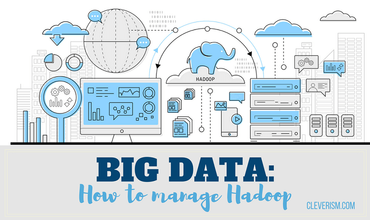
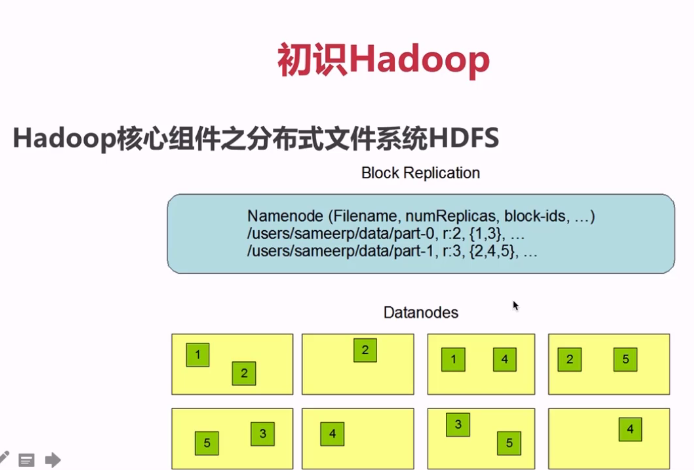
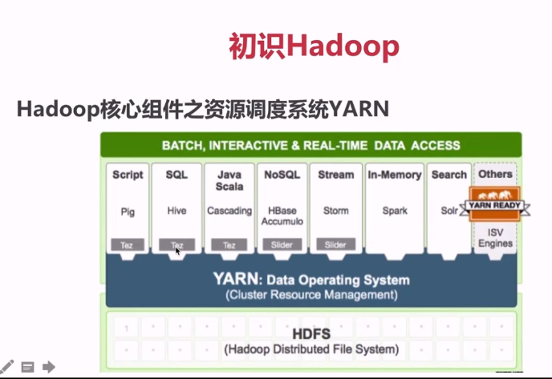
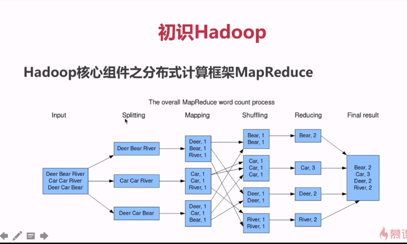
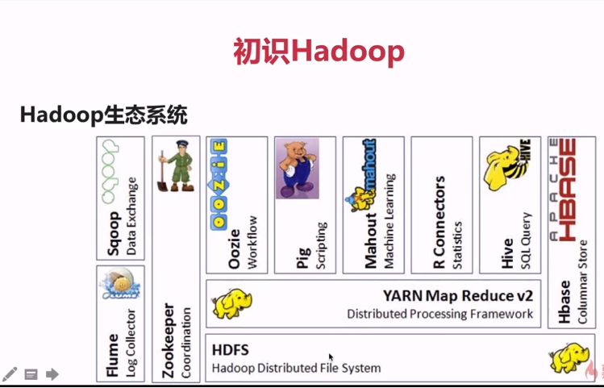

Big Data Hadoop

What Hadoop can do?
- 搭建大型数据仓库，PB级数据的存储、处理、分析、统计等业务
- Search Engine
- Logs Analytic
- Business Intelligence
- Data Mining
Hadoop核心组件之分布式文件系统HDFS
- 源自于Google的GFS论文，论文发表于2003年10月
- HDF是GFS的克隆版
- HDFS特点：扩展性&容错性&海量数据存储
- 将文件切分成指定大小的数据块（默认是128MB) 并以多副本的存储在多个机器上
- 数据切分、多副本、容错等操作对用户是透明度的（我们操作的时候还是以文件的方式进行操作）

Hadoop核心组件之资源调度系统YARN
- YARN：Yet Another Resource Negotiator
- 负责整个集群资源的管理和调控
- YARN特点：扩展性&容错性&多框架资源统一调度

Hadoop核心组件之分布式计算框架MapReduce
- 源自于Google的MapReduce论文，论文发表于2004年12月
- MapReduce是Google MapReduce的克隆版
-
MapReduce特点：扩展性&容错性&海量数据离线处理（并不能做实时处理）

Hadoop优势之高可靠性
- 数据存储：数据块多副本
- 数据计算：重新调度作业计算
Hadoop优势之高扩展性
- 存储/计算资源不够时，可以横向的线性扩展机器
- 一个集群中可以包含数以千计的节点
Hadoop优势之其它
- 存储在廉价机器上，降低成本
- 成熟的生态圈
狭义Hadoop VS 广义Hadoop
-
狭义的Hadoop：是一个适合大数据分布式存储（HDFS）、分布式计算（MapReduce）和资源调度（YARN）的平台；
-
广义的Hadoop：指的是Hadoop生态系统，Hadoop生态系统是一个很庞大的概念，hadoop是其中最重要最基础的一个部分；生态系统中的每一子系统只能解决某一个特定的问题域（甚至可能很窄），不搞统一型的一个全能系统，而是小而精的多个小系统。

Hadoop生态系统的特点
- 开源、社区活跃
- 囊括了大数据处理的方方面面
- 成熟的生态圈
Hadoop常用发行版及选型
- Apache Hadoop (Jar包冲突很严重)
- CDH: Cloudera Distributed Hadoop (和Spark合作也是特别好的)
- HDP: Hortonworks Data Platform
——–